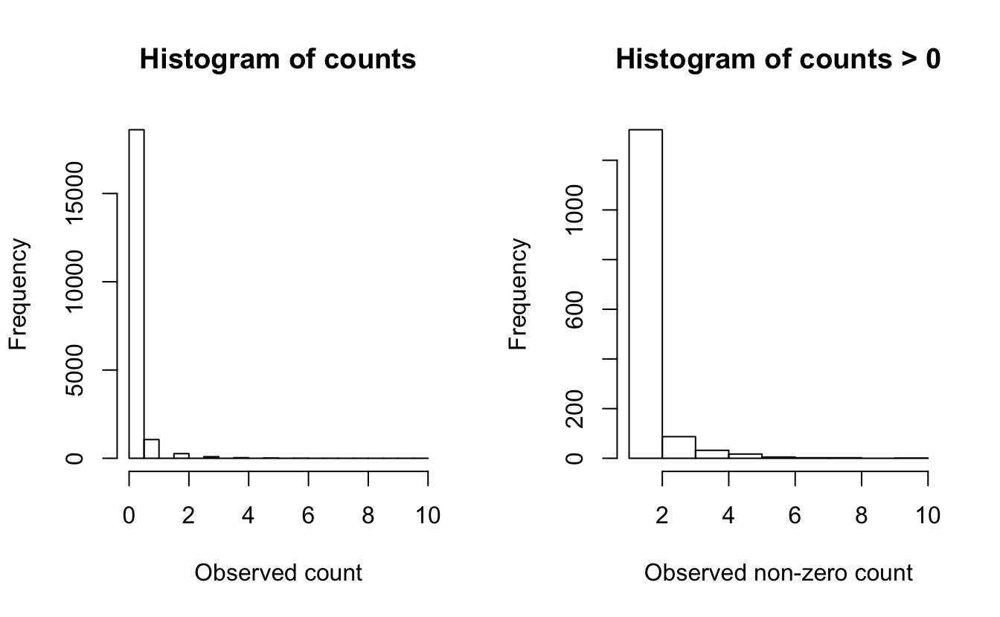
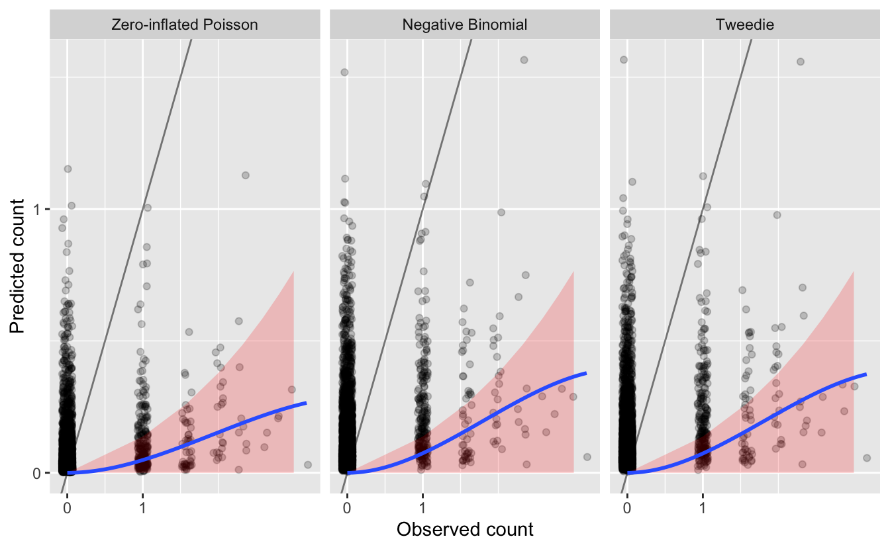
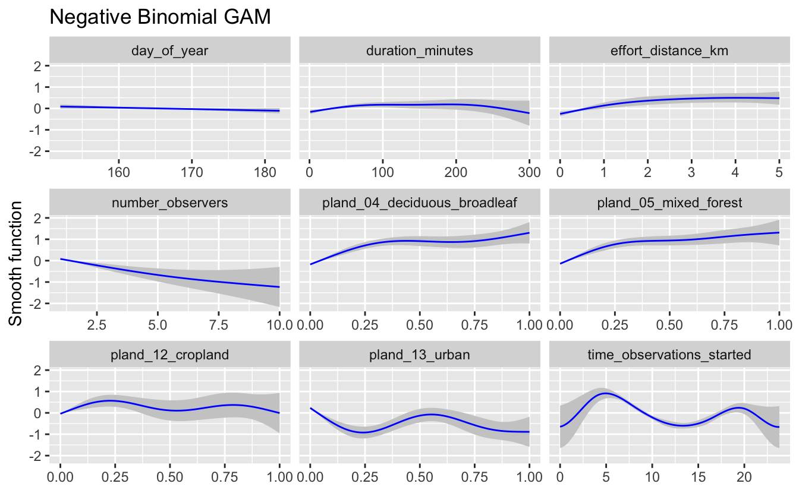
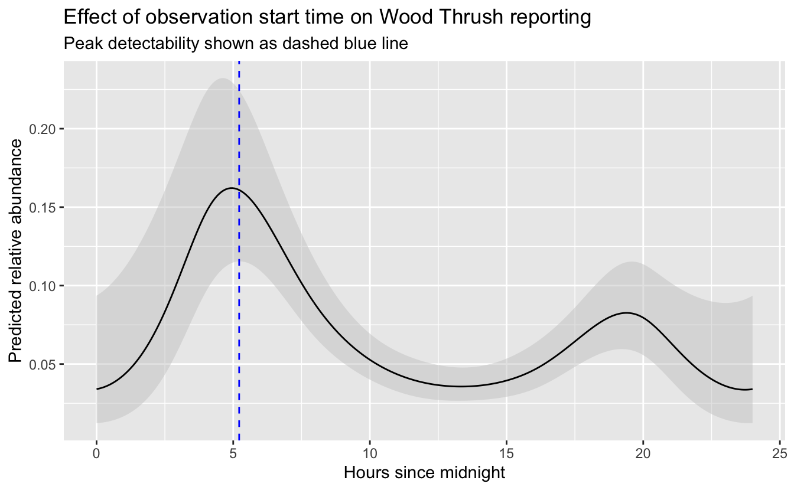
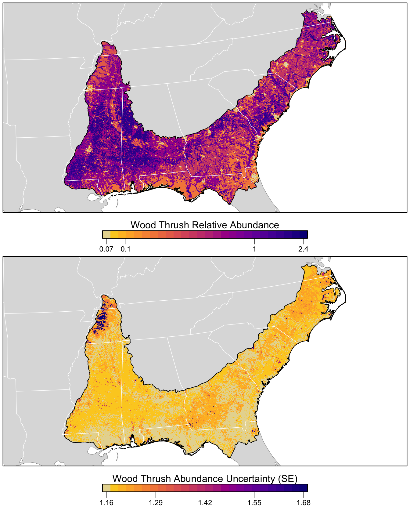

Chapter 6 Modeling Relative Abundance
6.1 Introduction
The previous two chapters focused on modeling occurrence. However, in addition to recording which species they observed, most eBirders also specify how many individuals of each species were observed. So, in this chapter, we’ll take advantage of these counts to model a relative measure of species abundance.
To motivate this section, we will focus on the specific goal of estimating a map of relative abundance. This type of map would help us to identifyareas with higher or lower abundance. The metric we’ll use to estimate abundance is the expected number of individuals observed on a standardized eBird checklist. Like the encounter rate model, the abundance model we present in this section accounts for variation in detection rates but it does not directly estimate the absolute detection probability. For this reason, the estimates of abundance can only be interpreted as a measure of relative abundance; an index of the count of the individuals of the species present in the search area. To match the common terminology in the literature, we refer to this as an estimate of relative abundance.
In some respects, the abundance model presented here is similar to the encounter rate model of Chapter 4. We start by spatiotemporally subsampling the training data to reduce the effects of spatial bias. In a departure from the methodology used for modelling encounter rate, we use semi-parametric models, fitting models of relative abundance using Generalized Additive Models (GAMs) to predict the count response. We have chosen to use GAMs because they can flexibly include many covariates while offering a choice of several error distributions suitable for count responses. It’s important to evaluate different count distributions because the distribution of eBird counts can vary strongly for different species, seasons, and regions, and the choice of distribution can have substantial impacts on model estimates. We’ll test three different distributions (zero-inflated Poisson, negative binomial, and Tweedie) and assess which of these fit the data best using cross validation. Finally, we’ll make predictions of relative abundance throughout BCR 27 and produce a map of these predictions.
6.2 Data preparation
Let’s start by loading the necessary packages and data. If you created or downloaded the files needed to follow the analyses in the previous chapters, you may want to download the data package and unzip it to your project directory. Because we’re modeling abundance in this chapter, we’ll remove any records for which the observer reported that Wood Thrush was present, but didn’t report a count of the number of species (coded as ‘X’ records in the eBird database).
library(lubridate)
library(sf)
library(raster)
library(dggridR)
library(pdp)
library(edarf)
library(mgcv)
library(fitdistrplus)
library(viridis)
library(fields)
library(tidyverse)
# resolve namespace conflicts
select <- dplyr::select
map <- purrr::map
projection <- raster::projection
# set random number seed to insure fully repeatable results
set.seed(1)
# setup output directory for saved results
if (!dir.exists("output")) {
dir.create("output")
}
# ebird data
ebird <- read_csv("data/ebd_woothr_june_bcr27_zf.csv") %>%
mutate(protocol_type = factor(protocol_type,
levels = c("Stationary" , "Traveling"))) %>%
# remove observations with no count
filter(!is.na(observation_count))
# modis habitat covariates
habitat <- read_csv("data/pland-elev_location-year.csv") %>%
mutate(year = as.integer(year))
# combine ebird and habitat data
ebird_habitat <- inner_join(ebird, habitat, by = c("locality_id", "year"))
# prediction surface
pred_surface <- read_csv("data/pland-elev_prediction-surface.csv")
# latest year of landcover data
max_lc_year <- pred_surface$year[1]
r <- raster("data/prediction-surface.tif")
# load gis data for making maps
map_proj <- st_crs(102003)
ne_land <- read_sf("data/gis-data.gpkg", "ne_land") %>%
st_transform(crs = map_proj) %>%
st_geometry()
bcr <- read_sf("data/gis-data.gpkg", "bcr") %>%
st_transform(crs = map_proj) %>%
st_geometry()
ne_country_lines <- read_sf("data/gis-data.gpkg", "ne_country_lines") %>%
st_transform(crs = map_proj) %>%
st_geometry()
ne_state_lines <- read_sf("data/gis-data.gpkg", "ne_state_lines") %>%
st_transform(crs = map_proj) %>%
st_geometry()6.2.1 Spatiotemporal subsampling
As discussed in Section 4.3, spatiotemporal subsampling detection and non-detection observations reduces both spatial and temporal bias and the class imbalance. We’ll use exactly the same hexagonal subsampling approach as in Chapter 4.
# generate hexagonal grid with ~ 5 km betweeen cells
dggs <- dgconstruct(spacing = 5)
# get hexagonal cell id and week number for each checklist
checklist_cell <- ebird_habitat %>%
mutate(cell = dgGEO_to_SEQNUM(dggs, longitude, latitude)$seqnum,
week = week(observation_date))
# sample one checklist per grid cell per week
# sample detection/non-detection independently
ebird_ss <- checklist_cell %>%
group_by(species_observed, year, week, cell) %>%
sample_n(size = 1) %>%
ungroup() %>%
select(-cell, -week)6.2.2 Test-train split
Before we fit the abundance models, we randomly split the data into 80% of checklists for training and 20% for testing. We’ll hold this 20% aside when we fit the model, then use it as an independent data set with which to test the predictive performance of the model. Here we select a random 20% of the data, but there are a variety of strategies to select data for testing that may be appropriate in different situations. At this stage, we’ll also retain only the variables that we’ll use as covariates in the models. In particular, we’ll use the full suite of effort covariates and the same four habitat covariates we used in Chapter 5. Deciduous broadleaf forest (pland_04) and mixed forest (pland_05) are known Wood Thrush breeding habitat, and these thrushes are known to avoid croplands (pland_12) and urban (pland_13). The specific set of habit covariates you use will be specific for your species and should be informed by a priori ecological knowledge of the species. See Section 3.1 for a list of the habitat covariates available in this data set.
hab_covs <- c(
# % deciduous forest
"pland_04",
# % mixed forest
"pland_05",
# % cropland
"pland_12",
# % urban
"pland_13")
ebird_split <- ebird_ss %>%
# select only the columns to be used in the model
select(observation_count,
# effort covariates
day_of_year, time_observations_started, duration_minutes,
effort_distance_km, number_observers, protocol_type,
# habitat covariates
hab_covs)
# split 80/20
ebird_split <- ebird_split %>%
split(if_else(runif(nrow(.)) <= 0.8, "train", "test"))
map_int(ebird_split, nrow)
#> test train
#> 3941 161426.3 Exploratory data analysis
Before we embark on modelling the counts, we’ll start by examining the distribution of the count data. This will help give us an idea of which distributions may be appropriate for modeling the counts of this species. Looking at the distribution of counts with and without the zeros can help reveal evidence of zero-inflation. eBird data often have a very high number of zero counts, since even common bird species are not seen on every checklist. Large numbers of zeros can also arise when the study extent borders on the species’ range boundary.
p <- par(mfrow = c(1, 2))
# counts with zeros
hist(ebird_ss$observation_count, main = "Histogram of counts",
xlab = "Observed count")
# counts without zeros
pos_counts <- keep(ebird_ss$observation_count, ~ . > 0)
hist(pos_counts, main = "Histogram of counts > 0",
xlab = "Observed non-zero count")
par(p)
The plot that includes zeros (left) shows an extremely zero-inflated and skewed distribution, due to the large number of zero-counts (checklists with no Wood Thrush detections). For the counts only (right), the data still show a highly skewed distribution, with lots of checklists with low numbers and only a few checklists with more than five Wood Thrush.
These plots and conclusions are only indicative—they provide some information about what we can expect for distributions at the next step. Overall, for Wood Thrush we can conclude that the counts are highly skewed with many zero observations.
6.4 Abundance models
Prior to fitting our GAM models, let’s construct the model formula that we’ll use when we call the fitting function. In a GLM where the relationship between a covariate and the response is linear, whereas a GAM allows smooth non-linear relationships. The degree of variation (wiggliness) allowed in each covariate relationship is controlled by the degrees of freedom. The k parameter determines the maximum wiggliness of the smooth, with higher values allowing for more potential wiggliness. GAMs use a data-driven approach to adaptively reduce the wiggliness (degrees of freedom) based on the training data.
There are a wide variety of different types of smooth relationships. We use a different different type of smooth for the checklist start time relationship. We want to joins the ends of the relationship, i.e. 0 and 24 are both midnight, so the smooth should be the same value at these points. To accomplish this we’ll use a cubic cyclic spline (bs = "cc").
The following code builds the GAM model formula, using only the covariates chosen in the previous section. Using this approach allows the formula to be automatically re-built in order to match any changes that one might make in the habitat types represented in the ebird_split data frame. If, for example, you decide to explore using a different set of covariates when modeling the abundance for a different species then the model formula will be built appropriately for your species.
# gam parameters
# degrees of freedom for smoothing
k <- 5
# degrees of freedom for cyclic time of day smooth
k_time <- 7
# continuous predictors
# hold out time to treat seperately since it's cyclic
continuous_covs <- ebird_split$train %>%
select(-observation_count, -protocol_type, -time_observations_started) %>%
names()
# create model formula for predictors
gam_formula_rhs <- str_glue("s({var}, k = {k})",
var = continuous_covs, k = k) %>%
str_flatten(collapse = " + ") %>%
str_glue(" ~ ", .,
" + protocol_type + ",
"s(time_observations_started, bs = \"cc\", k = {k})",
k = k_time) %>%
as.formula()
# model formula including response
gam_formula <- update.formula(observation_count ~ ., gam_formula_rhs)
gam_formula
#> observation_count ~ s(day_of_year, k = 5) + s(duration_minutes,
#> k = 5) + s(effort_distance_km, k = 5) + s(number_observers,
#> k = 5) + s(pland_04, k = 5) + s(pland_05, k = 5) + s(pland_12,
#> k = 5) + s(pland_13, k = 5) + protocol_type + s(time_observations_started,
#> bs = "cc", k = 7)Alternatively, the formula can be defined manually:
gam_formula <- observation_count ~ s(day_of_year, k = 5) +
s(duration_minutes, k = 5) +
s(effort_distance_km, k = 5) +
s(number_observers, k = 5) +
s(pland_04, k = 5) +
s(pland_05, k = 5) +
s(pland_12, k = 5) +
s(pland_13, k = 5) +
protocol_type +
s(time_observations_started, bs = "cc", k = 7)Now we’ll use this formula to fit GAM models, testing the following three count response distributions:
Zero-inflated Poisson: This distribution effectively fits the data in two parts: (1) a binomial model that determines the variables associated with species presence and (2) a Poisson count model for those places with species presence, that determines the variables associated with species count. This is an effective distribution when there are a large number of zero counts in the data and the positive counts approximate a Poisson distribution.
Negative binomial: The negative binomial distribution is related to the Poisson distribution. However, the variance can be considerably larger in the negative binomial distribution. This distribution is appropriate for data when the variance of the counts is much larger than the mean of the counts — a situation called over-dispersion that is very common in ecological count data.
Tweedie distribution: This is a very flexible distribution that encompasses a wide variety of shapes, including those with extremely high variance relative to the mean and extreme over-dispersion. The Tweedie distribution fit in GAM spans a range of distributions from the Poisson to the gamma, so it is a very flexible option.
# explicitly specify where the knots should occur for time_observations_started
# this ensures that the cyclic spline joins the variable at midnight
# this won't happen by default if there are no data near midnight
time_knots <- list(time_observations_started = seq(0, 24, length.out = k_time))
# zero-inflated poisson
m_ziplss <- gam(list(gam_formula, # count model
gam_formula[-2]), # presence model
data = ebird_split$test,
family = "ziplss",
knots = time_knots)
# negative binomial
m_nb <- gam(gam_formula,
data = ebird_split$train,
family = "nb",
knots = time_knots)
# tweedie distribution
m_tw <- gam(gam_formula,
data = ebird_split$train,
family = "tw",
knots = time_knots)6.5 Asssessment
Here we assess the predictive performance among the three models. Recall from Section 4.4.2 that this involves making predictions for the test dataset, which wasn’t used to fit the models, then assessing how well these predictions relate to the actual observed counts in the test dataset.
Care needs to be taken when making predictions from the zero-inflated Poisson model since it has two components: probability of presence and expected count given presence. As a result, the predict() function returns a two column matrix with the count and probability respectively, both on the scale of the link functions. So, we need to back-transform these values, then multiply them to get the expected counts. There may be situations in which you want to summarise these two values in different ways.
obs_count <- select(ebird_split$test, obs = observation_count)
# presence probability is on the complimentary log-log scale
# we can get the inverse link function with
inv_link <- binomial(link = "cloglog")$linkinv
# combine ziplss presence and count predictions
m_ziplss_pred <- predict(m_ziplss, ebird_split$test, type = "link") %>%
as.data.frame() %>%
transmute(family = "Zero-inflated Poisson",
pred = inv_link(V2) * exp(V1)) %>%
bind_cols(obs_count)
m_nb_pred <- predict(m_nb, ebird_split$test, type = "response") %>%
tibble(family = "Negative Binomial", pred = .) %>%
bind_cols(obs_count)
m_tw_pred <- predict(m_tw, ebird_split$test, type = "response") %>%
tibble(family = "Tweedie", pred = .) %>%
bind_cols(obs_count)
# combine predictions from all three models
test_pred <- bind_rows(m_ziplss_pred, m_nb_pred, m_tw_pred) %>%
mutate(family = as_factor(family))6.5.1 Predictive performance: Ranking
Assessing the fit of the models depends considerably on the goals of the model and hence on the most important aspects of the model fit for the intended use. For our motivating use-case, estimating a map of relative abundance for the purpose of identifying areas with higher or lower abundance, we will evaluate the models based on Spearman’s Rank Correlation. This will assess how well the model estimated the ranking of the sites from highest to lowest abundance.
# spearman’s rank correlation
test_pred %>%
group_by(family) %>%
summarise(rank_cor = cor.test(obs, pred,
method = "spearman",
exact = FALSE)$estimate) %>%
ungroup()| family | rank_cor |
|---|---|
| Zero-inflated Poisson | 0.205 |
| Negative Binomial | 0.225 |
| Tweedie | 0.226 |
In terms of ranking, the zero-inflated Poisson performs worst, having the lowest rank correlation. However, all the models are fairly similar and none have a strong correlation between predicted and observed counts.
6.5.2 Predictive performance: Magnitude
For other applications, it may also be important to generate accurate estimates of the magnitude of the relative abundance. For example, when identifying migration hot-spots it may be important to estimate high counts accurately to distinguish between multiple stop over sites. Or, if the goal is to generate an index of the total population size, it may be more important to generate accurate estimates of small to medium counts, and place less emphasis on the relatively rare high counts.
We begin the assessment of the quality of the magnitude of abundance estimates by looking at a plot of predicted and observerved counts from the test set. For illustrative purposes, lets assume for our situation that underestimated abundances are more problematic than overestimated abundances. We’ll highlight in red on these plots the regions where the predictions are underestimated by more than an order of magnitude. We’ll also overlay the line \(y = x\), which separates overestimates (above the line) from underestimates (below the line), and a blue smoothed fit showing the general trend through all the data.
# plot predicted vs. observed
ticks <- c(0, 1, 10, 100, 1000)
mx <- round(max(test_pred$obs))
ggplot(test_pred) +
aes(x = log10(obs + 1),
y = log10(pred + 1)) +
geom_jitter(alpha = 0.2, height = 0) +
# y = x line
geom_abline(slope = 1, intercept = 0, alpha = 0.5) +
# area where counts off by a factor of 10
geom_area(data = tibble(x = log10(seq(0, mx - 1) + 1),
y = log10(seq(0, mx - 1) / 10 + 1)),
mapping = aes(x = x, y = y),
fill = "red", alpha = 0.2) +
# loess fit
geom_smooth(method = "loess",
method.args = list(span = 2 / 3, degree = 1)) +
scale_x_continuous(breaks = log10(ticks + 1), labels = ticks) +
scale_y_continuous(breaks = log10(ticks + 1), labels = ticks) +
labs(x = "Observed count",
y = "Predicted count") +
facet_wrap(~ family, nrow = 1)
Overall, we see that most of the counts are underestimated, since most points and the blue line are below the gray \(y = x\) line.
We also see that Wood Thrush was not observed on most of these checklists. Although most predictions for these checklists are also zero (since the blue line reaches 0 predicted abundance at 0 actual abundance), there are still many cases with predicted Wood Thrush occurrence where none were observed. It’s hard to say how much of problem this kind of “overestimation” is since detection is known to be imperfect.
Finally, we see that there are also a large number of observations that are underestimated by an order of magnitude or more. How many of these cases are there?
| family | n | pct |
|---|---|---|
| Zero-inflated Poisson | 233 | 0.059 |
| Negative Binomial | 145 | 0.037 |
| Tweedie | 142 | 0.036 |
Based on this metric, it appears that the zero-inflated Poisson model is performing worst in terms of these “large” underestimates.
Finally, to get an overall sense of the quality of the magnitude of the predicted counts we will compute the test set mean absolute deviation (MAD), a robust statistic that describes the average deviation between observation and prediction. Note, we are not using the mean squared error because it will place more emphasis on errors when counts are high.
# mean absolute deviation
test_pred %>%
group_by(family) %>%
summarise(mad = mean(abs(obs - pred), na.rm = TRUE)) %>%
ungroup()| family | mad |
|---|---|
| Zero-inflated Poisson | 0.142 |
| Negative Binomial | 0.181 |
| Tweedie | 0.181 |
In terms of magnitude, the zero-inflated Poisson model performs the worst across most metrics: it has the largest number of problematic errors, but the lowest MAD. The negative binomial and Tweedie models are almost identical in terms of performace. Either model could be chosen; however, the negative binomial is a simpler model, with fewer parameters to estimate, so it seems reasonable to pick it to make our predictions.
Depending on your focal species and region, as well as the particular goals of your analysis, some aspects of model fit will be more important than others, so it’s important to consider your assessment criteria and make sure they match your application.
6.5.3 Assessing covariate effects
We recommend also assessing the fitted covariate effects to see whether they show biologically plausible relationships between covariates and species counts. Splines can sometimes overfit, notably when sample sizes are very large, and in this cases it is appropriate to reduce the degrees of freedom.
Calling plot() on the fitted GAM objects produces plots of the smooth functions for each of the separate predictors, which gives us a sense of the effect of each predictor on the count response. Unfortunately, for large numbers of predictors, plot() will produce a cramped, unreadable plot. Instead, we write a function to capture the data behind the plotting function, then plot them using ggplot2 instead.
# ggplot function
plot_gam <- function(m, title = NULL, ziplss = c("presence", "abundance")) {
# capture plot
tmp <- tempfile()
png(tmp)
p <- plot(m, pages = 1)
dev.off()
unlink(tmp)
# drop addition models in ziplss
if (m$family$family == "ziplss") {
is_presence <- map_lgl(p, ~ str_detect(.$ylab, "^s\\.1"))
if (ziplss == "presence") {
p <- p[is_presence]
} else {
p <- p[!is_presence]
}
}
# extract data
p_df <- map_df(p, ~ tibble(cov = rep(.$xlab, length(.$x)),
x = .$x, fit = .$fit, se = .$se))
# plot
g <- ggplot(p_df) +
aes(x = x, y = fit,
ymin = fit - se, ymax = fit + se) +
geom_ribbon(fill = "grey80") +
geom_line(col = "blue") +
facet_wrap(~ cov, scales = "free_x") +
labs(x = NULL,
y = "Smooth function",
title = title)
print(g)
invisible(p_df)
}
plot_gam(m_nb, title = "Negative Binomial GAM")
If these relationships seem too wiggly to be biologically realistic, you should reduce the degrees of freedom for the smooth until a biologically feasible relationship is achieved. Only use these graphs to assess the wiggliness of the predicted effects, as the values plotted on the y-axes of these graphs are standardized values. In this case, the relationships appear to be reasonable for the negative binomial model, so we will use it for prediction below.
6.6 Prediction
Now that we’ve selected the negative binomial GAM, we can use this model to map Wood Thrush relative abundance in BCR 27! In Section 3.4, we created a prediction surface consisting of the PLAND habitat covariates summarized on a regular grid of points across BCR 27. In this section, we’ll make predictions of relative abundance at these points. However, first we need to bring effort variables into this prediction surface. We’ll use a standard eBird checklist: a 1 km, 1 hour traveling count at the peak time of day for detecting this species. To determine this peak time, we’ll predict abundance and its 95% confidence limits at a series of times throughout the day, then pick the time at which the lower confidence limit is at its maximum. By using the lower confidence limits, we select a time that we are confident has high detectability and thus avoid potentially unrealistic predictions from times of day for which few or no data existed.
# create a dataframe of covariates with a range of start times
seq_tod <- seq(0, 24, length.out = 300)
tod_df <- ebird_split$train %>%
# find average pland habitat covariates
select(starts_with("pland")) %>%
summarize_all(mean, na.rm = TRUE) %>%
ungroup() %>%
# use standard checklist
mutate(day_of_year = yday(ymd(str_glue("{max_lc_year}-06-15"))),
duration_minutes = 60,
effort_distance_km = 1,
number_observers = 1,
protocol_type = "Traveling") %>%
cbind(time_observations_started = seq_tod)
# predict at different start times
pred_tod <- predict(pred_model, newdata = tod_df,
type = "link",
se.fit = TRUE) %>%
as_tibble() %>%
# calculate backtransformed confidence limits
transmute(time_observations_started = seq_tod,
pred = pred_model$family$linkinv(fit),
pred_lcl = pred_model$family$linkinv(fit - 1.96 * se.fit),
pred_ucl = pred_model$family$linkinv(fit + 1.96 * se.fit))
# find optimal time of day
t_peak <- pred_tod$time_observations_started[which.max(pred_tod$pred_lcl)]
# plot the partial dependence plot
ggplot(pred_tod) +
aes(x = time_observations_started, y = pred,
ymin = pred_lcl, ymax = pred_ucl) +
geom_ribbon(fill = "grey80", alpha = 0.5) +
geom_line() +
geom_vline(xintercept = t_peak, color = "blue", linetype = "dashed") +
labs(x = "Hours since midnight",
y = "Predicted relative abundance",
title = "Effect of observation start time on Wood Thrush reporting",
subtitle = "Peak detectability shown as dashed blue line")
So, the peak time of day for detecting Wood Thrush is around 5:13 AM. Let’s generate the prediction surface and make predictions at all the points. In addition to relative abundance, we’ll estimate standard error and 95% confidence limits.
# add effort covariates to prediction surface
pred_surface_eff <- pred_surface %>%
mutate(day_of_year = yday(ymd(str_glue("{max_lc_year}-06-15"))),
time_observations_started = t_peak,
duration_minutes = 60,
effort_distance_km = 1,
number_observers = 1,
protocol_type = "Traveling")
# predict
pred <- predict(pred_model, newdata = pred_surface_eff,
type = "link",
se.fit = TRUE) %>%
as_tibble() %>%
# calculate confidence limits and back transform
transmute(abd = pred_model$family$linkinv(fit),
abd_se = pred_model$family$linkinv(se.fit),
abd_lcl = pred_model$family$linkinv(fit - 1.96 * se.fit),
abd_ucl = pred_model$family$linkinv(fit + 1.96 * se.fit)) %>%
# add to prediction surface
bind_cols(pred_surface_eff, .) %>%
select(latitude, longitude, abd, abd_se, abd_lcl, abd_ucl)Next, we’ll convert this data frame to spatial features using sf, then rasterize the points using the prediction surface raster template.
r_pred <- pred %>%
# convert to spatial features
st_as_sf(coords = c("longitude", "latitude"), crs = 4326) %>%
select(abd, abd_se) %>%
st_transform(crs = projection(r)) %>%
# rasterize
rasterize(r)
r_pred <- r_pred[[-1]]
# save the rasters
tif_dir <- "output"
if (!dir.exists(tif_dir)) {
dir.create(tif_dir)
}
writeRaster(r_pred[["abd"]],
filename = file.path(tif_dir, "abundance-model_abd_woothr.tif"),
overwrite = TRUE)
writeRaster(r_pred[["abd_se"]],
filename = file.path(tif_dir, "abundance-model_se_woothr.tif"),
overwrite = TRUE)Finally, let’s make a map! For the relative abundance map, we’ll treat very small values of relative abundance as zero.
The values shown on this map are the expected number of Wood Thrush seen by an average eBirder conducting a 1 hour, 1 km checklist for which counting started at about 5:13 AM. As detectability is not perfect, we expect true Wood Thrush abundance to be higher than these values, but without estimating the detection rate directly it’s difficult to say how much higher. Also remember at this point that there was a lot of variation in eBird counts that wasn’t explained by the model. So this map shows the best estimate of relative abundance, given the model and variables selected for modeling.
# any expected abundances below this threshold are set to zero
zero_threshold <- 0.05
# project predictions
r_pred_proj <- projectRaster(r_pred, crs = map_proj$proj4string, method = "ngb")
par(mfrow = c(2, 1))
for (nm in names(r_pred)) {
r_plot <- r_pred_proj[[nm]]
par(mar = c(3.5, 0.25, 0.25, 0.25))
# set up plot area
plot(bcr, col = NA, border = NA)
plot(ne_land, col = "#dddddd", border = "#888888", lwd = 0.5, add = TRUE)
# modified plasma palette
plasma_rev <- rev(plasma(25, end = 0.9))
gray_int <- colorRampPalette(c("#dddddd", plasma_rev[1]))
pal <- c(gray_int(4)[2], plasma_rev)
# abundance vs. se
if (nm == "abd") {
title <- "Wood Thrush Relative Abundance"
# set very low values to zero
r_plot[r_plot <= zero_threshold] <- NA
# log transform
r_plot <- log10(r_plot)
# breaks and legend
mx <- ceiling(100 * cellStats(r_plot, max)) / 100
mn <- floor(100 * cellStats(r_plot, min)) / 100
brks <- seq(mn, mx, length.out = length(pal) + 1)
lbl_brks <- sort(c(-2:2, mn, mx))
lbls <- round(10^lbl_brks, 2)
} else {
title <- "Wood Thrush Abundance Uncertainty (SE)"
# breaks and legend
mx <- ceiling(1000 * cellStats(r_plot, max)) / 1000
mn <- floor(1000 * cellStats(r_plot, min)) / 1000
brks <- seq(mn, mx, length.out = length(pal) + 1)
lbl_brks <- seq(mn, mx, length.out = 5)
lbls <- round(lbl_brks, 2)
}
# abundance
plot(r_plot,
col = pal, breaks = brks,
maxpixels = ncell(r_plot),
legend = FALSE, add = TRUE)
# borders
plot(bcr, border = "#000000", col = NA, lwd = 1, add = TRUE)
plot(ne_state_lines, col = "#ffffff", lwd = 0.75, add = TRUE)
plot(ne_country_lines, col = "#ffffff", lwd = 1.5, add = TRUE)
box()
# legend
par(new = TRUE, mar = c(0, 0, 0, 0))
image.plot(zlim = range(brks), legend.only = TRUE, col = pal,
smallplot = c(0.25, 0.75, 0.06, 0.09),
horizontal = TRUE,
axis.args = list(at = lbl_brks,
labels = lbls,
fg = "black", col.axis = "black",
cex.axis = 0.75, lwd.ticks = 0.5,
padj = -1.5),
legend.args = list(text = title,
side = 3, col = "black",
cex = 1, line = 0))
}
6.7 Final thoughts
GAMs are complex and powerful models, but assessing their fit and adapting them accordingly is sometimes more of an art than a science. We recommend people using these functions for their own models consult with a statistician or someone with experience with GAMs. A good reference for GAMs is (Wood 2017).
References
Wood, Simon N. 2017. Generalized Additive Models: An Introduction with R. 2nd ed. Chapman and Hall/CRC.